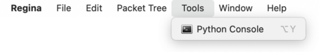
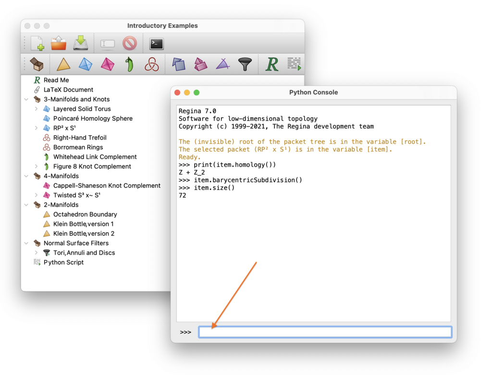
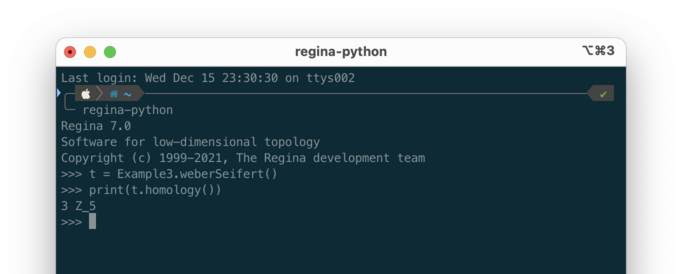
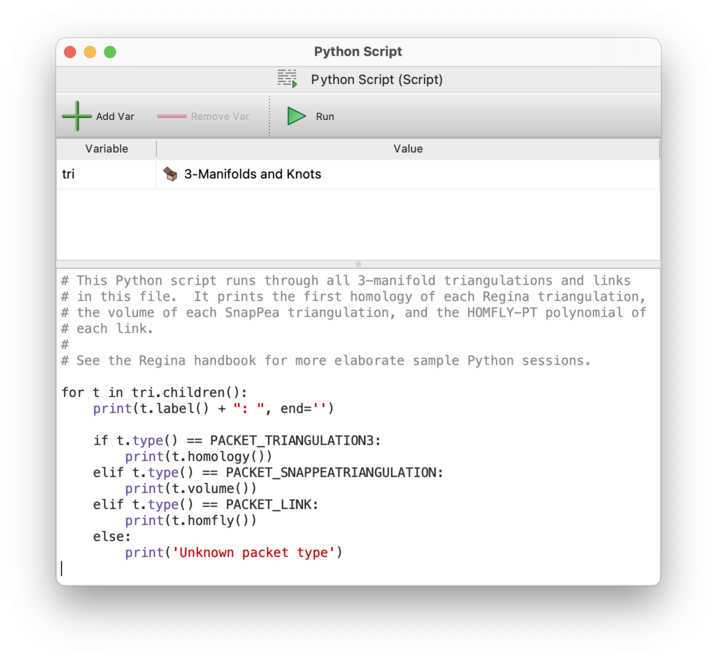
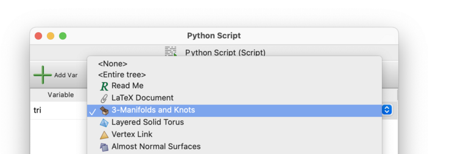
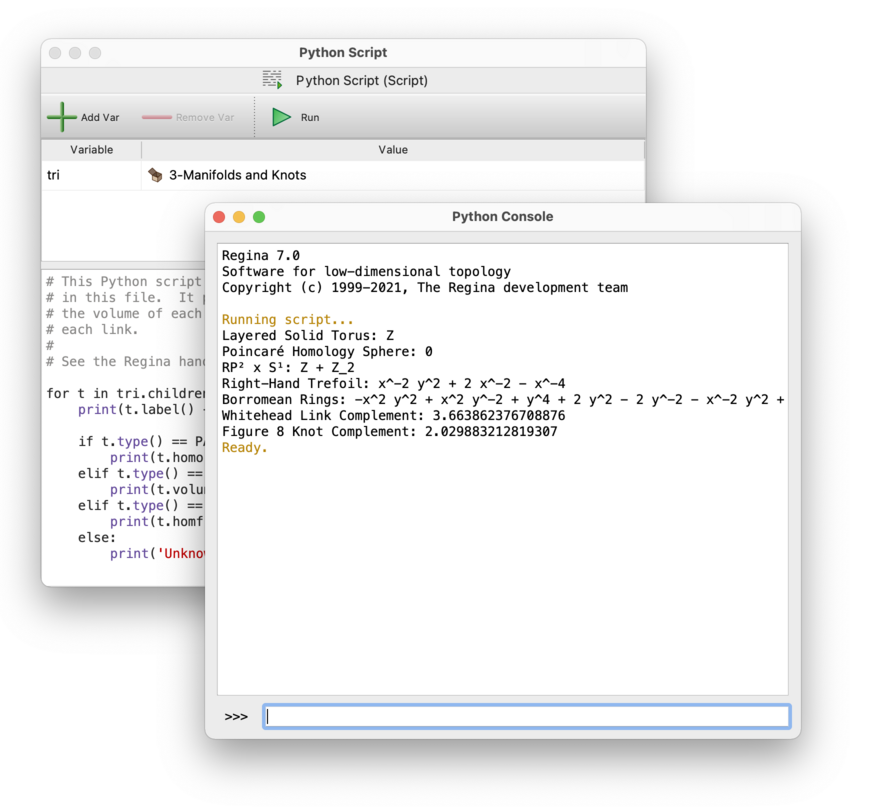

Python Scripting | |
| Prev | Next |
Table of Contents
Regina contains inbuilt scripting, which offers you fine control over Regina's mathematical engine and enables you to automate large amounts of processing. You can write and run scripts from directly within Regina, or you can use the separate command-line tool regina-python.
The user interface will stay in sync with any changes that you make through a script, which means you can happily modify a data file via scripts while you have it open.
All scripts in Regina use the Python programming language (http://www.python.org/). Regina can work with either Python 3 or Python 2, but you must choose your Python version when you build Regina. If you download a ready-made package then the packager has already made this choice for you; the ready-made packages on the Regina website use the default version of Python on each system where possible.
Regina includes a complete API reference for its calculation engine, which describes in detail the objects, classes and methods that are available through Python. To read this documentation, select → from the menu, or read it online at regina-normal.github.io. There is a special page in the API documentation outlining the main issues relevant to Python users, and you should read this also.
Warning
Regina's Python interface typically assumes you know what you are doing, and so the onus is on you to follow the rules. All constraints, preconditions and so on are thoroughly documented in the API documentation. Probably the easiest way to crash Regina is to bring up a Python console and do something “illegal” (like gluing together two tetrahedra that belong to different triangulations).
There are several ways of starting a Python session to work with Regina:
You can open a graphical Python console by selecting → from the menu (or by pressing the corresponding toolbar button).

A new console window will open as illustrated below, with an input area down the bottom (see the red arrow) and a full history of the session in the main part of the window. You can save this history by selecting →.

When you start the Python session, Regina will set some special variables for you:
itemIf you have a packet selected in the tree when you start the Python session, the variable
itemwill refer to this packet (see the figure above for an example of this).Note that, if you later change your selection in the packet tree, the
itemvariable will not change as a result.rootThe variable
rootwill refer to the hidden root at the top of your packet tree (this root is not visible in the user interface, but its top-level children are).
You are welcome to use these variables to change packets in your data file (or even add, remove or rename packets): the graphical user interface will always stay in sync with any changes that you make via Python.
You can run the command-line program regina-python without a graphical user interface at all. This will use the standard Python interpreter. Since this is a text-based interface, you can also redirect input and output in the usual way (using < and > in your command shell).

macOS users will find regina-python inside Regina's application bundle. See the FAQ entry for details.
Windows users do not have the command-line regina-python at all, though they can still use graphical Python consoles and script packets.
You can create a new script packet in your data file. Script packets allow you to save Python scripts along with your data, and they give your scripts easy access to the packets inside your file.
When you open a script packet, you will see your Python code in the lower part of the script editor, and a table of variables up the top.

You can add your own variables to this table, and set them to arbitrary packets within your data file. Regina will always set these variables to the corresponding packets before running your script.

At the top of the script editor you will find buttons to compile and run your script. Compiling is optional: it merely gives you a chance to spot syntax errors as you go. When you press , Regina will run your script in a new graphical Python console. The console will be left open in case you wish to experiment further.

Again, you are welcome to change packets in your data file via scripts (or even add, remove or rename packets): the graphical user interface will always stay in sync with any changes that your scripts make.
| Prev | Contents | Next |
| Exporting | Up | Accessing Regina from Python |